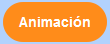
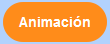
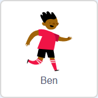
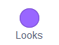
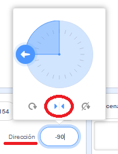
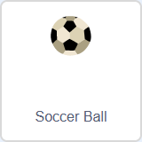
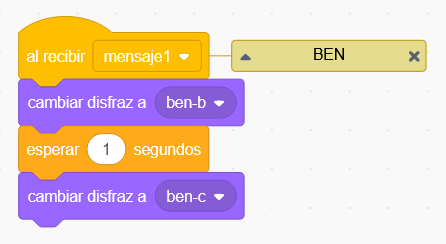
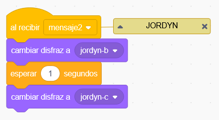

3. Playing football¶
En esta práctica vamos a programar a dos personajes que jugarán al fútbol pasándose un balón de uno a otro.

We start the Scratch editor.
Click language button
 upper menu bar and select English.
upper menu bar and select English.Pulsamos el botón de tutoriales
 y
luego el botón de animación .
y
luego el botón de animación .Seleccionamos el tutorial "Deslizarse" y lo visualizamos.
Después seleccionamos el tutorial "Animar un objeto" y lo visualizamos.
En estos dos tutoriales veremos el funcionamiento básico del programa. Una vez terminados los tutoriales vamos a crear un programa en el que dos personajes dan patadas a un balón que se desplaza por la pantalla.
Delete the cat sprite by pressing on the icon of the trash can.

Ahora escogemos un fondo adecuado para nuestro juego. Cambiamos el fondo de escenario a un campo de futbol.
Press the button choose a backdrop
 .
.Search in the topic Exteriores.
and select the backdrop Playing Field.

A continuación añadimos un nuevo personaje, un niño.
Press the button choose an object
 .
.Search in the topic Gente.
and select the object Ben.
Vamos a programar la posición inicial del niño. Movemos al niño a la posición deseada y en el botón movimiento
 elegimos la instrucción
elegimos la instrucción
 .
.En el botón apariencia  elegimos el disfraz inicial del niño.

Añadimos un nuevo personaje, una niña.
Press the button choose an object
.Search in the topic Gente.
and select the object Jordyn.

Vamos a programar la posición inicial de la niña. Movemos a la niña a la posición deseada y en el botón movimiento
elegimos la instrucción
.En el botón apariencia elegimos el disfraz inicial de la niña.

Por último, dentro del objeto Jordyn, pulsamos en la opción de dirección y fijamos el giro a -90 grados y de izquierda a derecha pulsando en las dos flechas enfrentadas. De esta manera la niña no quedará boca arriba al girar en sentido contrario.
Añadimos un nuevo personaje, un balón de futbol.
Press the button choose an object
.Search in the topic Deportes.
and select the object Soccer Ball.
Programamos el movimiento del balón con dos deslizamientos a la izquierda y dos deslizamientos a la derecha, siguiendo las instrucciones del tutorial. Los dos movimientos a cada lado se utilizan para que parezca que el balón sube y baja de un lado a otro.

Press the green flag
 to test the operation of the program.
to test the operation of the program.El balón debe moverse a un lado y a otro entre las piernas de los dos personajes.
Ahora vamos a coordinar a todos los objetos mediante mensajes para que los niños golpeen el balón cuando les llegue a los pies.
Primero modificamos el código del balón para que envíe mensajes al llegar a cada uno de los extremos.

El mensaje2 se consigue pulsando en nuevo mensaje para crearlo.


Seleccionamos al objeto Ben para añadir el siguiente programa.
Seleccionamos al objeto Jordyn para añadir el siguiente programa.
Press the green flag
to test the operation of the program.
{kind=link}
{kind=link}
{kind=link}
Ejercicios¶
Modifica el programa para que los personajes estén situados en otro lugar distinto de la pantalla.
Crea un programa para que un personaje se mueva dando vueltas por el campo para entrenar y pasando por cuatro esquinas.
Modifica el programa y el fondo para que un solo jugador juegue al frontón con una pelota.